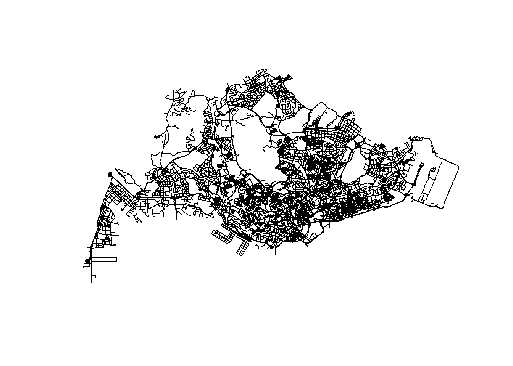
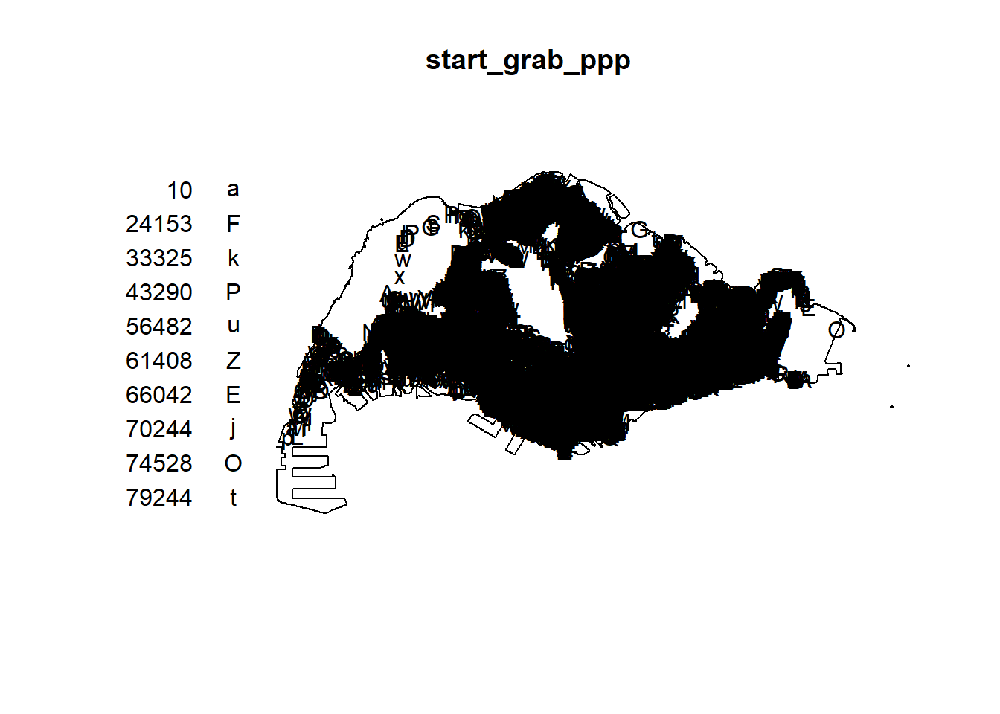
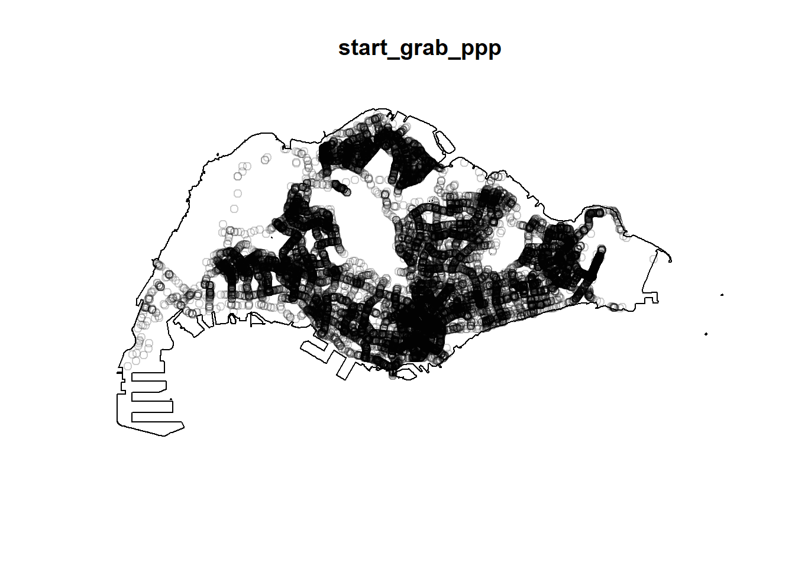

pacman::p_load(sf, spatstat, raster, maptools, tmap, tidyverse, arrow)Take-Home Exercise 1: Application of Spatial Point Patterns Analysis to discover the geographical distribution of Grab hailing services in Singapore
Background
With the growing of smart cities all over the world, it is important for the government to be able to know the movement of the people and see what they can do to make the lives of the people better. This requires data of the human mobility to know where people are moving from and to. As now we have the advancement of Information and Communication Technologies (ICT) like smart phones, smart watches, and GPS devices, we can acquire large volumes of data relating to human mobility. With this, we can better examine the movement of the people in the city and better plan and manage the architecture and services provided in the smart city.
In this Take Home exercise, we will be applying appropriate spatial point patterns analysis methods to discover the geographical and spatio-temporal distribution of Grab hailing services locations in Singapore.
Import
Packages
sf - allows import, management, manipulation, analysis and processing of vector-based geospatial in R
spatstat - offers a comprehensive set of tools for statistical analysis of spatial point patterns, will be used to perform 1st and 2nd-order spatial point patterns analysis and derive kernel density estimation (KDE) layer
raster - reads, writes, manipulates, analyses and model for gridded spatial data, used to convert image output generate by spatstat into raster format
maptools - provides a set of tools for manipulating geographic data, mainly use to convert spatial objects into ppp format of spatstat
tmap - provides functions for plotting cartographic quality static point patterns maps or interactive maps by using leaflet API
readr - for fast and efficient reading of rectangular data files
tidyr - to easily reshape and tidy data, including functions for pivoting and gathering columns
dplyr - useful for data manipulation, providing functions for filtering, summarizing, and transforming data frames
arrow - enables efficient data interchange between different systems and languages by standardizing how data is represented in memory
Aspatial Data
- Grab-Posisi - a dataset of Grab taxi location points
grab <- open_dataset("data/aspatial/GrabPosisi") |> as_tibble()
#grab <- read_parquet("data/aspatial/GrabPosisi/part-00000-8bbff892-97d2-4011-9961-703e38972569.c000.snappy.parquet")
grab# A tibble: 30,329,685 × 9
trj_id driving_mode osname pingtimestamp rawlat rawlng speed bearing accuracy
<chr> <chr> <chr> <int> <dbl> <dbl> <dbl> <int> <dbl>
1 70014 car andro… 1554943236 1.34 104. 18.9 248 3.9
2 73573 car andro… 1555582623 1.32 104. 17.7 44 4
3 75567 car andro… 1555141026 1.33 104. 14.0 34 3.9
4 1410 car andro… 1555731693 1.26 104. 13.0 181 4
5 4354 car andro… 1555584497 1.28 104. 14.8 93 3.9
6 32630 car andro… 1555395258 1.30 104. 23.2 73 3.9
7 64631 car andro… 1554768955 1.35 104. 0 82 3
8 76484 car andro… 1554783532 1.34 104. 3.98 321 3.65
9 65747 car ios 1554898418 1.29 104. 4.68 324 50
10 60478 car ios 1555593189 1.33 104. 16.5 31 16
# ℹ 30,329,675 more rowsGeospatial Data
- Road data set from OpenStreetMap (Malaysia, Singapore, and Brunei coverage)
road <- st_read(dsn = "data/geospatial/malaysia-singapore-brunei-latest-free.shp", layer = "gis_osm_roads_free_1")Reading layer `gis_osm_roads_free_1' from data source
`C:\emilyaurelia\IS415-GAA\Take-home_Ex\Take-home_Ex01\data\geospatial\malaysia-singapore-brunei-latest-free.shp'
using driver `ESRI Shapefile'
Simple feature collection with 1759836 features and 10 fields
Geometry type: LINESTRING
Dimension: XY
Bounding box: xmin: 99.66041 ymin: 0.8021131 xmax: 119.2601 ymax: 7.514393
Geodetic CRS: WGS 84mpsz2019 <- st_read("data/geospatial/MasterPlan2019SubzoneBoundaryNoSeaGEOJSON.geojson")Reading layer `MasterPlan2019SubzoneBoundaryNoSeaGEOJSON' from data source
`C:\emilyaurelia\IS415-GAA\Take-home_Ex\Take-home_Ex01\data\geospatial\MasterPlan2019SubzoneBoundaryNoSeaGEOJSON.geojson'
using driver `GeoJSON'
Simple feature collection with 332 features and 2 fields
Geometry type: MULTIPOLYGON
Dimension: XY, XYZ
Bounding box: xmin: 103.6057 ymin: 1.158699 xmax: 104.0885 ymax: 1.470775
z_range: zmin: 0 zmax: 0
Geodetic CRS: WGS 84Data Preprocessing
Aspatial Data
Converting data type of pingtimestamp(int) to date-time(dttm)
As we want to find the starting and ending points of the Grab taxi location, we need to find the starting and ending time of the trip. However, the current pingtimestamp is in the integer format, so that currently it is not that readable. As such, we need to transform the data type of pingtimestamp into date-time format.
grab$pingtimestamp <- as_datetime(grab$pingtimestamp)
glimpse(grab)Rows: 30,329,685
Columns: 9
$ trj_id <chr> "70014", "73573", "75567", "1410", "4354", "32630", "646…
$ driving_mode <chr> "car", "car", "car", "car", "car", "car", "car", "car", …
$ osname <chr> "android", "android", "android", "android", "android", "…
$ pingtimestamp <dttm> 2019-04-11 00:40:36, 2019-04-18 10:17:03, 2019-04-13 07…
$ rawlat <dbl> 1.342326, 1.321781, 1.327088, 1.262482, 1.283799, 1.3003…
$ rawlng <dbl> 103.8890, 103.8564, 103.8613, 103.8238, 103.8072, 103.90…
$ speed <dbl> 18.910000, 17.719076, 14.021548, 13.026521, 14.812943, 2…
$ bearing <int> 248, 44, 34, 181, 93, 73, 82, 321, 324, 31, 203, 50, 252…
$ accuracy <dbl> 3.900, 4.000, 3.900, 4.000, 3.900, 3.900, 3.000, 3.649, …Finding the start of the trip
Now we find the starting location by arranging the pingtimestamp in an ascending order for each trip and get the earliest time.
start_grab <- grab %>%
group_by(trj_id) %>% # group based on the trips
arrange(pingtimestamp) %>% # arrange the time in ascending order
filter(row_number() == 1) %>% # choose the first timing
mutate(weekday = wday(pingtimestamp,
label = TRUE,
abbr = TRUE),
start_hr = hour(pingtimestamp),
day = factor(mday(pingtimestamp)))
start_grab# A tibble: 28,000 × 12
# Groups: trj_id [28,000]
trj_id driving_mode osname pingtimestamp rawlat rawlng speed bearing
<chr> <chr> <chr> <dttm> <dbl> <dbl> <dbl> <int>
1 70895 car android 2019-04-08 00:09:26 1.38 104. 9.95 111
2 21926 car android 2019-04-08 00:09:48 1.29 104. 11.0 75
3 47498 car ios 2019-04-08 00:09:50 1.38 104. 18.6 307
4 18103 car android 2019-04-08 00:09:55 1.45 104. 0.404 159
5 41322 car android 2019-04-08 00:09:57 1.28 104. 17.9 232
6 64813 car ios 2019-04-08 00:10:03 1.31 104. 17.1 106
7 81518 car ios 2019-04-08 00:10:14 1.31 104. 6.24 213
8 66542 car android 2019-04-08 00:11:17 1.36 104. 9.11 179
9 25201 car ios 2019-04-08 00:12:05 1.37 104. 12.0 211
10 82401 car android 2019-04-08 00:12:11 1.30 104. 10.6 107
# ℹ 27,990 more rows
# ℹ 4 more variables: accuracy <dbl>, weekday <ord>, start_hr <int>, day <fct>Finding the end of the trip
We also need to find the ending location by arranging the pingtimestamp in an descending order for each trip and get the latest time.
end_grab <- grab %>%
group_by(trj_id) %>% # group based on the trips
arrange(desc(pingtimestamp)) %>% # arrange the time in descending order
filter(row_number() == 1) %>% # choose the first timing
mutate(weekday = wday(pingtimestamp,
label = TRUE,
abbr = TRUE),
start_hr = hour(pingtimestamp),
day = factor(mday(pingtimestamp)))
end_grab# A tibble: 28,000 × 12
# Groups: trj_id [28,000]
trj_id driving_mode osname pingtimestamp rawlat rawlng speed bearing
<chr> <chr> <chr> <dttm> <dbl> <dbl> <dbl> <int>
1 81574 car ios 2019-04-21 23:56:49 1.34 104. 15.3 103
2 54687 car android 2019-04-21 23:56:46 1.44 104. 8.15 299
3 17190 car android 2019-04-21 23:56:36 1.34 104. 12.4 202
4 13793 car android 2019-04-21 23:56:30 1.32 104. 6.47 170
5 39014 car ios 2019-04-21 23:56:27 1.33 104. 3.59 169
6 41170 car ios 2019-04-21 23:56:13 1.32 104. 13.1 71
7 64519 car ios 2019-04-21 23:55:49 1.43 104. 14.3 239
8 70461 car ios 2019-04-21 23:55:32 1.29 104. 0.970 51
9 41154 car ios 2019-04-21 23:55:10 1.32 104. 10.8 118
10 65488 car ios 2019-04-21 23:54:47 1.38 104. 0 244
# ℹ 27,990 more rows
# ℹ 4 more variables: accuracy <dbl>, weekday <ord>, start_hr <int>, day <fct>Convert the dataframe into sf and change the projection coordinate system
After finding the starting and ending timing for each trip, we want to make the two dataframes to be an sf data type to be able to process it with the other files. First, we need to change it to an sf data type using the st_as_sf() function to change the longitude(rawlng) and latitude(rawlat) of the starting locations into points. Then we transform the projection coordinate system to Singapore’s.
start_sf <- st_as_sf(start_grab,
coords = c("rawlng", "rawlat"),
crs = 4326) |>
st_transform(crs = 3414)
end_sf <- st_as_sf(end_grab,
coords = c("rawlng", "rawlat"),
crs = 4326) |>
st_transform(crs = 3414)Save the sf into RDS and call to use
saveRDS(start_sf, file = "start_sf.rds")
saveRDS(end_sf, file = "end_sf.rds")start_sf <- readRDS("start_sf.rds")
end_sf <- readRDS("end_sf.rds")Convert the dataframe into ppp and find for any duplicates
start_ppp <- as.ppp(start_sf)
any(duplicated(start_ppp))[1] FALSEGeospatial Data
Check the projection layers of the Road and the Master Plan 2019 Subzone Boundary
st_crs(road)Coordinate Reference System:
User input: WGS 84
wkt:
GEOGCRS["WGS 84",
DATUM["World Geodetic System 1984",
ELLIPSOID["WGS 84",6378137,298.257223563,
LENGTHUNIT["metre",1]]],
PRIMEM["Greenwich",0,
ANGLEUNIT["degree",0.0174532925199433]],
CS[ellipsoidal,2],
AXIS["latitude",north,
ORDER[1],
ANGLEUNIT["degree",0.0174532925199433]],
AXIS["longitude",east,
ORDER[2],
ANGLEUNIT["degree",0.0174532925199433]],
ID["EPSG",4326]]st_crs(mpsz2019)Coordinate Reference System:
User input: WGS 84
wkt:
GEOGCRS["WGS 84",
DATUM["World Geodetic System 1984",
ELLIPSOID["WGS 84",6378137,298.257223563,
LENGTHUNIT["metre",1]]],
PRIMEM["Greenwich",0,
ANGLEUNIT["degree",0.0174532925199433]],
CS[ellipsoidal,2],
AXIS["geodetic latitude (Lat)",north,
ORDER[1],
ANGLEUNIT["degree",0.0174532925199433]],
AXIS["geodetic longitude (Lon)",east,
ORDER[2],
ANGLEUNIT["degree",0.0174532925199433]],
ID["EPSG",4326]]From the result of the code above, we can see that both of the data have the same projection, which is WGS 84 with the CRS of EPSG 4326.
Change the projection to Singapore’s projected coordinate system
However, the projection mentioned above does not fit the Singapore’s projection, so we need to change both of the projection to SVY21 / Singapore TM with the CRS of EPSG 3414.
road <- st_transform(road, 3414)
st_crs(road)Coordinate Reference System:
User input: EPSG:3414
wkt:
PROJCRS["SVY21 / Singapore TM",
BASEGEOGCRS["SVY21",
DATUM["SVY21",
ELLIPSOID["WGS 84",6378137,298.257223563,
LENGTHUNIT["metre",1]]],
PRIMEM["Greenwich",0,
ANGLEUNIT["degree",0.0174532925199433]],
ID["EPSG",4757]],
CONVERSION["Singapore Transverse Mercator",
METHOD["Transverse Mercator",
ID["EPSG",9807]],
PARAMETER["Latitude of natural origin",1.36666666666667,
ANGLEUNIT["degree",0.0174532925199433],
ID["EPSG",8801]],
PARAMETER["Longitude of natural origin",103.833333333333,
ANGLEUNIT["degree",0.0174532925199433],
ID["EPSG",8802]],
PARAMETER["Scale factor at natural origin",1,
SCALEUNIT["unity",1],
ID["EPSG",8805]],
PARAMETER["False easting",28001.642,
LENGTHUNIT["metre",1],
ID["EPSG",8806]],
PARAMETER["False northing",38744.572,
LENGTHUNIT["metre",1],
ID["EPSG",8807]]],
CS[Cartesian,2],
AXIS["northing (N)",north,
ORDER[1],
LENGTHUNIT["metre",1]],
AXIS["easting (E)",east,
ORDER[2],
LENGTHUNIT["metre",1]],
USAGE[
SCOPE["Cadastre, engineering survey, topographic mapping."],
AREA["Singapore - onshore and offshore."],
BBOX[1.13,103.59,1.47,104.07]],
ID["EPSG",3414]]mpsz2019 <- st_zm(mpsz2019, zm="Z")
mpsz2019 <- st_transform(mpsz2019, 3414)
st_crs(mpsz2019)Coordinate Reference System:
User input: EPSG:3414
wkt:
PROJCRS["SVY21 / Singapore TM",
BASEGEOGCRS["SVY21",
DATUM["SVY21",
ELLIPSOID["WGS 84",6378137,298.257223563,
LENGTHUNIT["metre",1]]],
PRIMEM["Greenwich",0,
ANGLEUNIT["degree",0.0174532925199433]],
ID["EPSG",4757]],
CONVERSION["Singapore Transverse Mercator",
METHOD["Transverse Mercator",
ID["EPSG",9807]],
PARAMETER["Latitude of natural origin",1.36666666666667,
ANGLEUNIT["degree",0.0174532925199433],
ID["EPSG",8801]],
PARAMETER["Longitude of natural origin",103.833333333333,
ANGLEUNIT["degree",0.0174532925199433],
ID["EPSG",8802]],
PARAMETER["Scale factor at natural origin",1,
SCALEUNIT["unity",1],
ID["EPSG",8805]],
PARAMETER["False easting",28001.642,
LENGTHUNIT["metre",1],
ID["EPSG",8806]],
PARAMETER["False northing",38744.572,
LENGTHUNIT["metre",1],
ID["EPSG",8807]]],
CS[Cartesian,2],
AXIS["northing (N)",north,
ORDER[1],
LENGTHUNIT["metre",1]],
AXIS["easting (E)",east,
ORDER[2],
LENGTHUNIT["metre",1]],
USAGE[
SCOPE["Cadastre, engineering survey, topographic mapping."],
AREA["Singapore - onshore and offshore."],
BBOX[1.13,103.59,1.47,104.07]],
ID["EPSG",3414]]Set the Singapore boundary
We already set the projection coordinate system for mpsz2019 and road to the Singapore’s projected coordinate system. With this, we can find the boundary for Singapore using st_union() of the mpsz2019.
Since we want to exclude the outer islands, we need to remove the polygons of these outer islands using the filter() function from the dplyr package.
main_sg <- mpsz2019 %>% filter(!grepl("ISLANDS", Description))Then we can plot the Singapore mainland to see the mainland boundary of our Singapore map.
sg_boundary <- st_union(main_sg)
plot(sg_boundary)
Filtering to Singapore roads
Now, we need to filter the roads to those which are in Singapore. This can be done using st_intersection() or st_filter()
road_sg <- st_intersection(road, sg_boundary)
plot(road_sg["geometry"])sg_road <- st_filter(road, sg_boundary, .pred = st_intersects)
plot(sg_road["geometry"])As the running time of st_intersection() and st_filter() to filter the roads in Singapore is too long, we can save the data inside an RDS file with saveRDS(), so the next time we want to use the data, we can just load this file using readRDS()
saveRDS(sg_road, file = "sg_road.rds")
saveRDS(road_sg, file = "road_sg.rds")sg_road <- readRDS("sg_road.rds")
plot(sg_road["geometry"])tmap_mode("plot")
tm_shape(start_sf) +
tm_dots(col="red") +
tm_shape(sg_road) +
tm_lines()
sg_boundary_spatial <- as_Spatial(sg_boundary)
sg_boundary_sp <- as(sg_boundary_spatial, "SpatialPolygons")
sg_boundary_owin <- as(sg_boundary_sp, "owin")
plot(sg_boundary_owin)
Combining starting points of Grab taxis with the Singapore boundary owin object
start_grab_ppp = start_ppp[sg_boundary_owin]
plot(start_grab_ppp)
Kernel Density Estimation
Computing kernel density estimation using automatic bandwidth selection method
We use density() function of the spatstat package to compute the kernel density. There are some configurations for this function:
Bandwidth: we can use bw.diggle(), bw.CvL(), bw.scott(), bw.ppl() for the bandwidth selection method
Kernel: the smoothing kernels are gaussian, epanechnikov, quartic, disc
First we try with using bw.diggle() and gaussian as our bandwidth and kernel respectively.
kde_start_bw <- density(start_grab_ppp,
sigma=bw.diggle,
edge=TRUE,
kernel="gaussian")
plot(kde_start_bw)
The density values of the output is very small (from 0 to 0.002) which is too small to comprehend as the default unit measurement for SVY21 is in meters.
To mitigate this problem, we can use the rescale() function to convert the units into kilometers.
start_grab_ppp.km <- rescale(start_grab_ppp, 1000, "km")kde_start_bw.km <- density(start_grab_ppp.km,
sigma=bw.diggle,
edge=TRUE,
kernel="gaussian")
plot(kde_start_bw.km)
Let us try to plot the kernel density graphs with the different bandwidth selection method.
kde_start_bw_diggle.km <- density(start_grab_ppp.km,
sigma=bw.diggle,
edge=TRUE,
kernel="gaussian")
kde_start_bw_cvl.km <- density(start_grab_ppp.km,
sigma=bw.CvL,
edge=TRUE,
kernel="gaussian")
kde_start_bw_scott.km <- density(start_grab_ppp.km,
sigma=bw.scott,
edge=TRUE,
kernel="gaussian")
kde_start_bw_ppl.km <- density(start_grab_ppp.km,
sigma=bw.ppl,
edge=TRUE,
kernel="gaussian")
par(mfrow=c(2, 2))
plot(kde_start_bw_diggle.km, main ="bw.diggle")
plot(kde_start_bw_cvl.km, main ="bw.cvl")
plot(kde_start_bw_scott.km, main ="bw.scott")
plot(kde_start_bw_ppl.km, main ="bw.ppl")kde_start_adaptive <- adaptive.density(start_grab_ppp.km, method="kernel")
plot(kde_start_adaptive)
Since the starting points of the trips are independent of each other, it is more suitable for us to use bw.diggle() or bw.ppl() to understand about the starting location of the Grab taxi. Moreover, since we are analyzing geographical points that are
gridded_kde_start <- as.SpatialGridDataFrame.im(kde_start_bw.km)
kde_start_bw_raster <- raster(gridded_kde_start)
kde_start_bw_rasterclass : RasterLayer
dimensions : 128, 128, 16384 (nrow, ncol, ncell)
resolution : 0.4162063, 0.2250614 (x, y)
extent : 2.667538, 55.94194, 21.44847, 50.25633 (xmin, xmax, ymin, ymax)
crs : NA
source : memory
names : v
values : -3.745309e-13, 2295.244 (min, max)projection(kde_start_bw_raster) <- CRS("+init=EPSG:3414")
kde_start_bw_rasterclass : RasterLayer
dimensions : 128, 128, 16384 (nrow, ncol, ncell)
resolution : 0.4162063, 0.2250614 (x, y)
extent : 2.667538, 55.94194, 21.44847, 50.25633 (xmin, xmax, ymin, ymax)
crs : +proj=tmerc +lat_0=1.36666666666667 +lon_0=103.833333333333 +k=1 +x_0=28001.642 +y_0=38744.572 +ellps=WGS84 +units=m +no_defs
source : memory
names : v
values : -3.745309e-13, 2295.244 (min, max)tmap_mode("plot")
tm_shape(kde_start_bw_raster) +
tm_raster() +
tm_layout(legend.position = c("right", "bottom"), frame = FALSE)